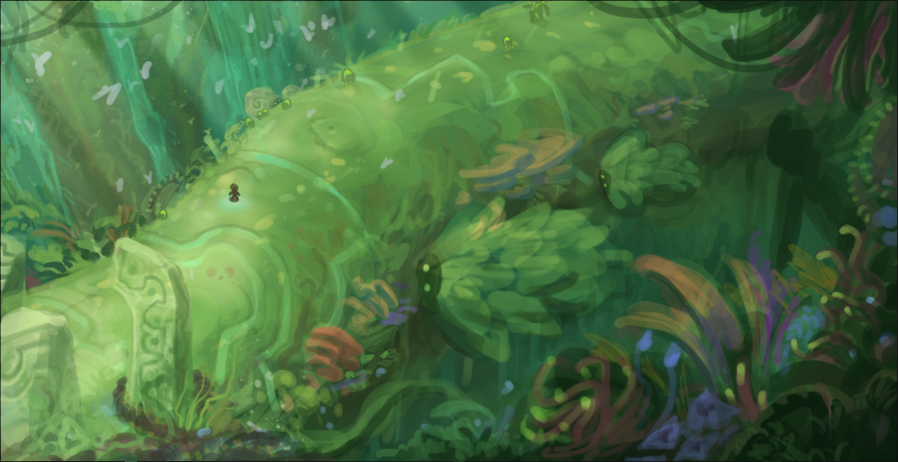
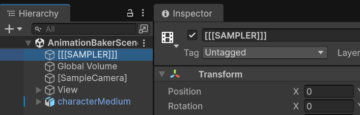
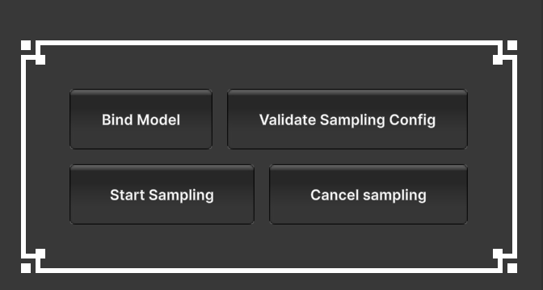
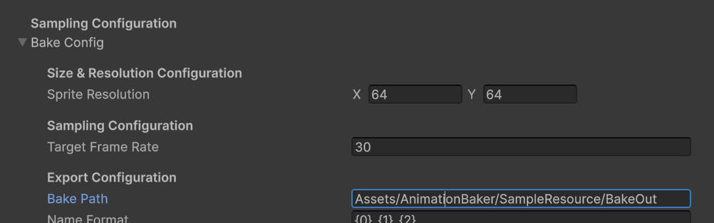

Malish Studio

Malish Studio
Welcome to the homepage of Malish Studio! We’re a game development and tool development studio based in Vietnam (GMT+7). Here, you can find information and updated documentations of our published tools. Get in touch!
Jump right in
| Tools | What’s it? | Find it here! |
|---|---|---|
| Pixel Animation Baker | Sample 3D animation into crisp pixel 2D animation | |
| Future Tools | In development… |
Contact
Email: malishstudiosupport@proton.me with your invoice number
In the case where you would like to report a bug, or request help with a specific case, you may refer to this report format:
Report Format
Tool:
Tool version:
Bug/Case Description:
Unity Version:
Render Pipeline:
OS:
Pixel Animation Baker
Changelog
1.0: First Release
Pixel Animation Baker Documentation
If you’re viewing this on PDF, you can go to https://malish-studio.github.io/MalishStuWebsite/index.html for latest update
Table of Content
- 1/Getting started
- 2/Configuration
- 3/Complimentary RendererFeatures
- 4/Troubleshoot Manual
1/Getting started
0. Setup
URP Render Pipeline Asset must allow Alpha Processing.
Go to Edit > Project Settings > Quality, in the active quality tier, open Render Pipeline Asset in the inspector. In the Post Processing section of the asset, tick enable Alpha Processing
1. Open scene AnimationBakerScene
Tip
You may also turn off the No Camera Rendering warning, and also adjust the Game View size to your liking

2. Drag your model onto the scene, adjust your model’s transform, and [SampleCamera]’s FOV/transform to your liking
Tip
In the scene view, locate the [SampleCamera] object. There should be a ground plane and a background plane to help you position your model.
When you change the Camera’s aspect or size, you can navigate to the AlignPlane component to align the planes correctly. For perspective camera, there’s currently no support to align ground plane

3. Open the [[[SAMPLER]]] object and drag your model’s reference into AnimationSampleRequester’s Root Model Transform field and the AnimationClip you want to sample into Sampler Clips field

4. Enter Play Mode and tap button Start Sampling on AnimationSampleRequester component

5. Navigate to the Bake Path to see your exported spritesheet!

Tip
After you’re done baking, you can view the baked animation data to the right hand side, and buttons to navigate the list of baked animations to the left hand side.
You can also click on the animation data to copy the spritesheet name to your clipboard.

Note
For Capturing the Photo image of your object, you can skip the Animation references. And tap the Capture Object button instead of Start Sampling button
1.1/Setup for more advanced usage
- Create a new RendererData
It’s generally a good practice to create a separate RendererData for the sampling scene vs your normal usage RendererData. To do this, go to the active RenderPipelineAsset, duplicate a RendererData, rename it and add the newly created RendererData to the Renderer list

Next, you can go to [SampleCamera]’s Camera component, and change the Renderer to your newly created Renderer. This camera will now render using this Renderer, and you can add further effects to this Renderer to your likings.

2/Configuration
2.0/ Unity Compability Feature Config |
By default, the tool should be compatible with various Unity built-in features, such as post-processing volume, Renderer Features, Renderer Layer, Line Renderer, etc.
Please send me an email if you have a problem using a Unity built-in features with the tool.
Tip
Feel free to add lighting and Post-Processing Volume to Bake Scene!
Scene Post-processing volume

URP Renderer feature
See here for example
2.1/Model&Animation Config
2.1.1/ Root Model Transform |
Reference to the model to be sampled
2.1.2/ Sampler Clips |
The list of AnimationClips to be sampled
Caution
Animator component must use non-legacy AnimationClips
Animation component must use legacy AnimationClips
2.1.3/ Collect Animations on Bind |
if enabled, everytime the model is bound, it will also collect all the AnimationClips referenced by the Animation/Animator component and add them to Sampler Clips. The model is bound in these three occasions if a model reference is assigned (a) on Awake, (b) when validate config, and (c) when user clicks the Bind Model button
2.2/Bake Config
2.2.1/Sprite Resolution
The size of exported sprites. Be cautious when increasing the size of sprite, as this will increase the exported sprite sheet proportionally.
2.2.2/Target Framerate
The framerate of the exported spritesheet animation. Be cautious when increasing the target framerate, as this will increase the exported sprite sheet proportionally.
When using mode Wait Frame, the highframe rate is not guaranteed to be stable. The usual safe threshold is to be equal or below 60fps, depending on the machine.
2.2.3/Save Path
Save path is relative to the Project directory
2.2.4/Exported Name Format
You can use string format to name the exported files. The formatted argument is as below:
0 - Model Root transform name
1 - Sampling AnimationClip name
2 - Sprite Resolution
3 - Target Framerate
2.2.5/Exported Texture Format
The texture format to use for the exported spritesheet
2.3/Sampling Resource Template
2.3.1/Sampling RenderTexture Configs
Any subsequent RenderTextures created for sampling purpose will copy the Color Fomat, Depth Stencil Format, and Filter Mode of this original SampleRenderTexture.
You can adjust theses config to better suit your usage https://docs.unity3d.com/6000.4/Documentation/ScriptReference/Experimental.Rendering.GraphicsFormat.html
2.4/Frame Seeking Mode
This option defines how the sample find the animation frame to blit
Mode Wait Frame |
In this mode, animation is played **synchronously**. Each update, the sampler increments the timer by deltaTime, and checks if it should blit the current frame based on the timer, if yes perform blit and reset the timer
Important
Sampling via this mode provides the most visual similarity to how you view the animation/effects in scene view.
However, it’s also sensitive to the running framerate, as the baked animation’s frametime is always a multiple of the running frametime
Mode Active Sampling |
In this mode, each update the sampler would request the animator to jump to the frame it needs, and blit the previous rendered frame
Note
Active Sampling flow
1.Update 0 : Sampler request frame 0
2.End of Update 0 : frame 0 get rendered to the graphics buffer
3.Update 1 : blit from the graphics buffer to the output buffer and request next frame
2.5/Buffer Frame End
In 3D looping animation, the frame 0 and the very last frame of the animation is usually the same for seamless looping. When baking into 2D animation, these animations will create two similar frames. Tick this option if you want to blit the final frame, and omit it if not.
3/Complimentary RendererFeatures
The package comes with several RendererFeatures, intended to aid with the pixel/stylized look.
Note
To use any of the RenderFeatures in your own Baker scene. The steps are generally as belows:
- Go to [SampleCamera] in the scene, navigate to Renderer
- Search for the RendererData in your project
- Add the RendererFeatures corresponding to the feature to RendererData
| Features | RendererFeatures | Material |
|---|---|---|
| Gradient Sample | FullscreenRenderPassRenderFeature | PAB_GradientMapEffect |
| Posterize | PosteriseRendererFeature | PAB_PosterizeEffect |
| Outline | FullscreenRenderPassRenderFeature | PAB_Outline |
| Palette Resample | PalleteResampleRendererFeature | PAB_PaletteResample |
Note
You can search for Sample_Effect_Renderer for a practical example on how to set up each Renderer Feature
For more information on RendererFeature, reference these Unity official documentations
1/GradientResampleColor
This example adds a URP RendererFeature to resample the value of the blit image (in other words, the lightness/darkness of the image) to match the gradient provided in the post-processing material
Use FullscreenRenderPassRenderFeature together with [PAB_GradientMapEffect] material
Important
The FullscreenPassRendererFeature requires Fetch Color Buffer
Note
You can change the gradient image to another image of your choosing. This example uses a Lospec pallete. Substitute the Renderer in this image example with your active Renderer

Material Specs
-
- GradientTexture
- the texture to sample color from, you can either set the filter mode of this texture to Bilinear for a smooth color transition, or Point, for a clean stylized color transition. The colors of the texture should be one horizontal strip, and should go from dark to light from left to right.
-
- ValueCalculationMode
- the types of lightness/darkness calculation. GREYSCALE is a simple average calculation, while LUMINANCE uses explicit weights to be more accurate to how human eyes perceive colors.
2/Posterize
This effect reduces the color to achieve the rougher flat-shading stylized look
Use PosteriseRendererFeature with the material [PAB_PosterizeEffect]
Important
The FullscreenPassRendererFeature requires Fetch Color Buffer
Material Specs
Hue Posterization:
-
- PosterizeHue
- enable this to posterize hue
-
- HueSteps
- the step to perform hue posterization. As a rule of thumb, the lower this value, the more the hue variance is reduced
-
- PosterizeHueLightness
- enable this to posterize hue lightness
-
- PosterizeHueLightnessGradient
- within the hue, the gradient to posterize the lightness/darkness
3/Outline
This effect adds an outline to your image using the depth data.
Use FullscreenRenderPassRenderFeature together with PAB_Outline material
Important
The FullscreenPassRendererFeature requires Fetch Color Buffer and Depth
Material Specs
Outline Color:
-
- Saturation
- The saturation of the outline
-
- Color Multiply
- The outline color will be a median of its surrounding color, then multiplied by this color parameter
Depth:
-
- Depth Difference Threshold
- The depth distance threshold that would register a pixel as an outline
-
- Outline Mode
- Whether the outline is to be inside or outside of the image
Note
Generally, a lower Depth Difference Threshold means the effect will be more likely to register an edge as an outline
4/PaletteResample
This effect change the colors of your frame to those from the input palette based on which color on the palette is closest to the source color.
The feature currently support only horizontal palette!
You can use this feature by adding the PalleteResampleRendererFeature RendererFeature to the RendererData active in the [SampleCamera]
Feature Specs
The config for this feature is directly on the RendererFeature inspector. It’s comprised of two distinct phase, (1st) Extract the colors from the Color Palette textures, and (2nd) Redraw the fullscreen frame with the extracted colors.
The second phase is inherited from Unity’s FullScreenPassRendererFeature, which you can view further info here https://docs.unity3d.com/Packages/com.unity.render-pipelines.universal@14.0/api/Global%20Namespace.FullScreenPassRendererFeature.html
Fullscreen Config:
Important
The Pass Material field must be set to PAB_PaletteResample material The FullscreenPassRendererFeature requires Fetch Color Buffer
Palette Config:
-
- Color Horizontal
- The number of colors on your palette texture, all colors are sampled horizontally
-
- Palette Texture
- The palette texture. When the texture width is higher than the color count, you can change the filter setting of the texture to either get a rough or smooth gradient
-
- Compute Shader
- (exact) The compute shader extracting the palette colors. This field must be set to the ExtractColorPalette Compute Shader
-
- Palette Material
- (exact) The material to receive the color palettes. This field must be set to the PAB_PaletteResample material
The field highlighted in yellow must exactly adhere to this image reference, with the exception of the material which has been renamed from [Shader Graphs_PaletteResample] to [PAB_PaletteResample]
The field highlighted in green is open to user adjustment.

4/Troubleshoot Manual
Common Problems
1. Baked spritesheet’s background is not transparent
First, verify that your configuration is correct:
- [SampleCamera]’s background color (clear color) is transparent (alpha is zero)
- SampleRenderTexture is referenced as [SampleCamera]’s Output Texture and its color format has alpha component
- In your URP Render Asset, make sure that you tick Alpha Processing in the Post-processing dropdown